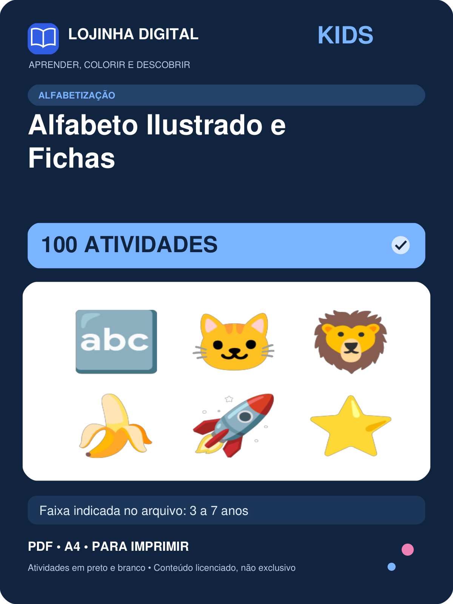
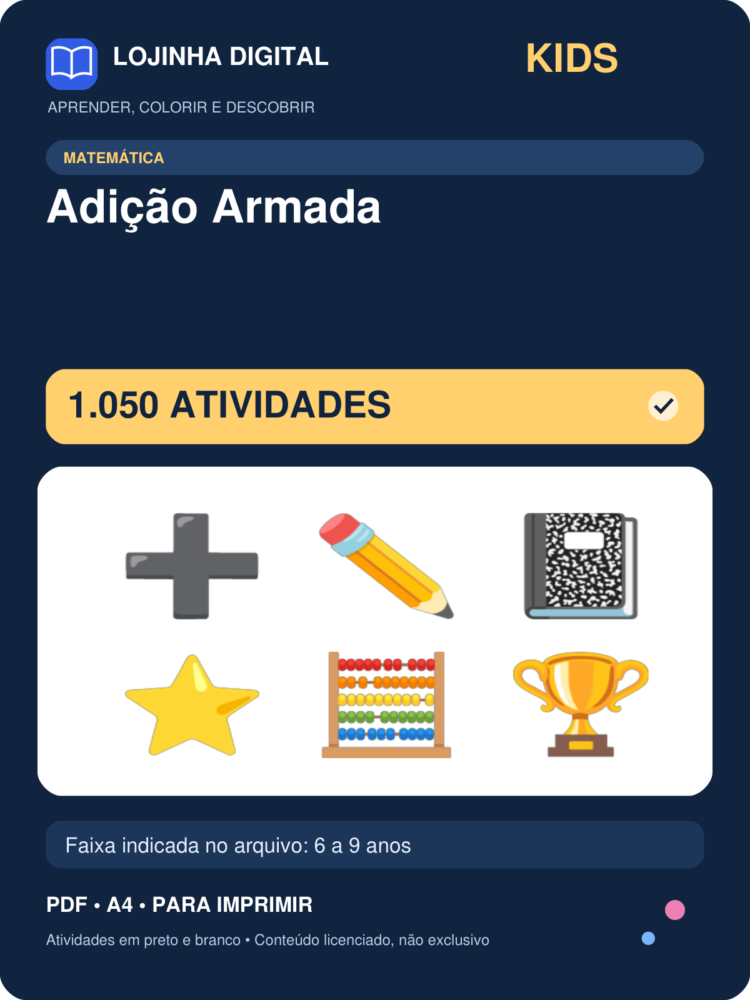
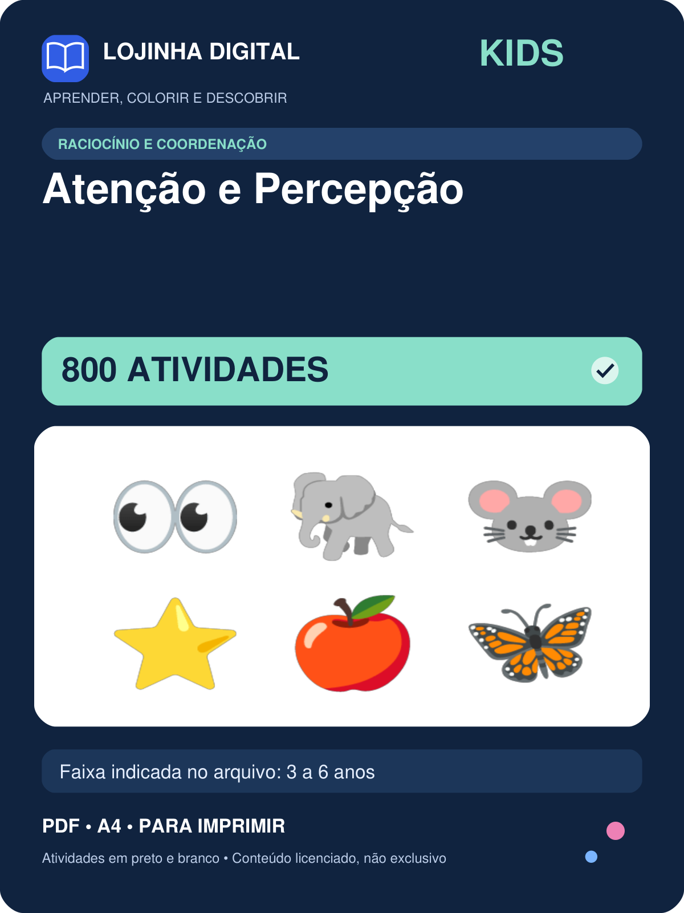
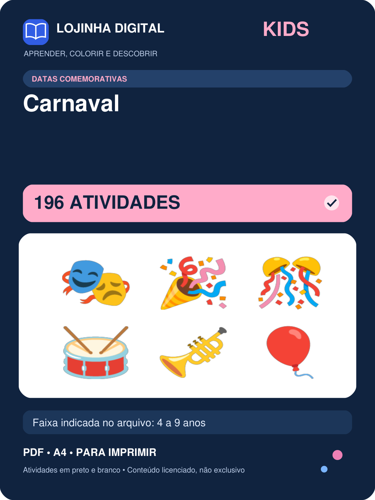
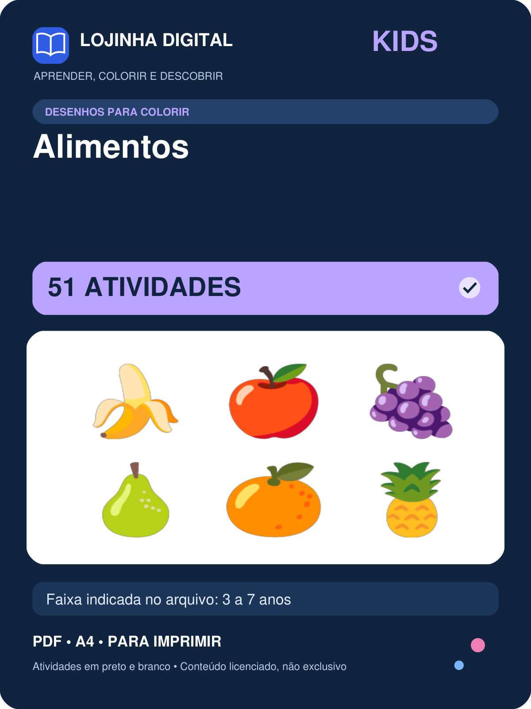
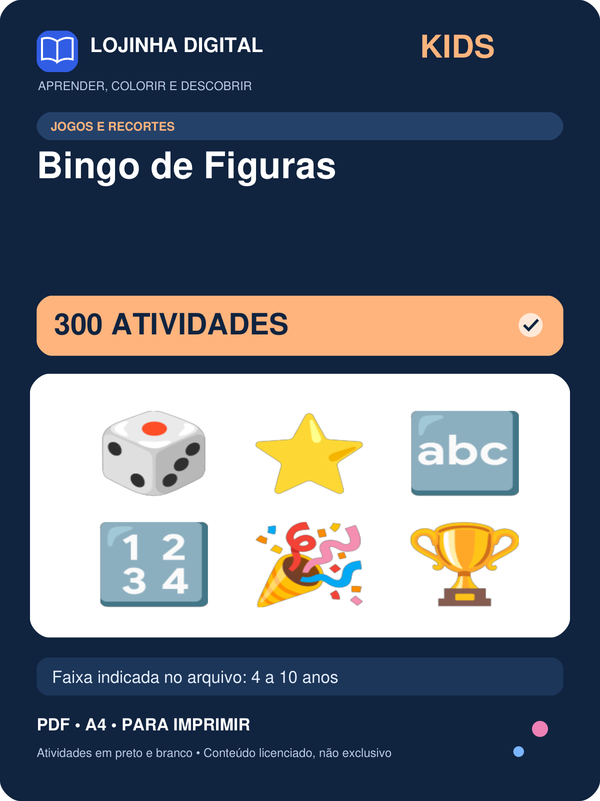

Lojinha Digital Kids
Prévia de seis capas representativas — as 63 estão na galeria e na planilha. Somente capas, sem páginas de atividades.

Alfabetização
100 atividades • 3 a 7 anos
Matemática
1050 atividades • 6 a 9 anos
Raciocínio e Coordenação
800 atividades • 3 a 6 anos
Datas Comemorativas
196 atividades • 4 a 9 anos
Desenhos para Colorir
51 atividades • 3 a 7 anos
Jogos e Recortes
300 atividades • 4 a 10 anos